1 허브 M3와 매터 - Home Assistant
1.1 Matter에 관한 기본 상식
Matter는 스마트 홈 기기들을 서로 호환되게 연결하기 위해 개발된 표준 프로토콜입니다. 이 표준은 다양한 제조사의 스마트 홈 제품들이 원활하게 통신하고 제어될 수 있도록 하기 위해 설계되었습니다. Matter는 Zigbee Alliance(현재는 Connectivity Standards Alliance, CSA로 명칭 변경)가 주도하며, 구글, 애플, 아마존, 삼성 등 주요 기술 기업들이 참여하고 있습니다. 아래는 Matter와 관련된 주요 개념들에 대한 설명입니다.
1.1.1 Matter Controller (or Hub)
Matter Controller는 Matter 생태계 내에서 여러 장치들을 연결하고 관리하는 중심 역할을 하는 장치입니다. 주로 스마트폰, 스마트 스피커, 스마트 디스플레이 등이 이 역할을 합니다. Matter Controller는 다음과 같은 기능을 수행합니다:
장치 등록 및 설정: 새로운 Matter 장치를 네트워크에 추가하고 초기 설정을 관리합니다.
장치 관리: 연결된 모든 Matter 장치들을 모니터링하고 제어합니다.
자동화 및 스케줄링: 다양한 자동화 시나리오와 스케줄을 설정하여 장치들이 특정 조건에서 동작하도록 합니다.
보안: 네트워크의 보안을 유지하고 장치들 간의 안전한 통신을 보장합니다.
1.1.2 Matter Bridge
Matter Bridge는 Matter 네트워크와 다른 프로토콜을 사용하는 장치들 사이의 다리 역할을 합니다. 예를 들어, Zigbee나 Z-Wave 장치를 Matter 네트워크에 통합할 때 사용됩니다. Matter Bridge는 다음과 같은 기능을 수행합니다:
프로토콜 변환: 서로 다른 프로토콜 간의 통신을 가능하게 하여, 비호환 장치들도 Matter 네트워크에서 제어될 수 있도록 합니다.
통합 관리: 다양한 프로토콜을 사용하는 장치들을 하나의 플랫폼에서 관리할 수 있게 합니다.
확장성: 기존의 스마트 홈 장치들을 폐기하지 않고 Matter 네트워크에 통합하여 사용자가 더 많은 장치를 활용할 수 있도록 합니다.
1.1.3 Thread
Thread는 저전력, 저비용, 메시 네트워크 프로토콜로, 스마트 홈 및 IoT 기기들 간의 안정적이고 확장 가능한 통신을 위해 설계되었습니다. Thread는 Matter의 주요 네트워크 기술 중 하나로, 다음과 같은 특징을 가집니다:
메시 네트워크: 모든 장치들이 서로 연결되어 데이터를 전달하며, 네트워크 내의 장치 하나가 고장나더라도 다른 경로를 통해 통신을 지속할 수 있습니다.
저전력: 배터리로 구동되는 장치들도 효율적으로 통신할 수 있도록 저전력 설계가 되어 있습니다.
보안: IP 기반 프로토콜을 사용하여 높은 수준의 보안을 제공하며, 네트워크에 연결된 모든 장치 간의 암호화된 통신을 지원합니다.
확장성: 여러 장치들이 간편하게 네트워크에 추가될 수 있어, 대규모 설치에도 적합합니다.
이러한 개념들을 바탕으로, Matter는 스마트 홈 환경에서의 사용자 경험을 개선하고, 제조사와 사용자 모두에게 더 나은 호환성과 편의성을 제공합니다.
1.2 허브 M3
Aqara 스마트 허브 M3는 Aqara의 첫 번째 Thread 지원 Border Router로, Thread, Zigbee 3.0 및 Bluetooth 장치를 모두 지원합니다.
새롭게 업그레이드된 Cross-LAN 및 Cross-HUB 기능을 통해 로컬 자동화와 Matter를 지원하는 강력한 스마트 홈 허브입니다.
ARM 1Ghz 듀얼 코어 A7 아키텍처를 사용하여 다양한 데이터 처리와 자동화 제어에 최적화되어 있습니다.
2.4GHz와 5GHz 듀얼 밴드 Wi-Fi와 RJ45 포트를 통한 유선 네트워크 연결 및 PoE 전원 공급을 지원합니다. 어댑터를 통한 전원 공급뿐 아니라, USB C 인터페이스의 데이터 통신 기능을 통해 다른 주변 장치와 연결하여 사용할 수 있습니다.
고출력 적외선 송신기가 전면에 6개, 측면에 4개 탑재되어 넓은 공간에서도 적외선 장치를 안정적으로 제어할 수 있습니다.
여러 대의 스마트 허브 M3를 동일 네트워크에 구성하면 넓은 영역에서 안정적인 로컬 네트워크를 구현할 수 있습니다.
허브 대체 기능 덕분에 허브 하나에 문제가 발생해도 다른 허브가 역할을 대신하여 네트워크를 안정적으로 유지할 수 있습니다.
8GB eMMC 스토리지를 내장하여 클라우드 의존도를 낮추고 사용자 데이터를 보호할 수 있습니다.
스마트 싱스, 애플 홈킷, 구글홈과 Matter 표준 프로토콜을 지원하는 모든 IoT 플랫폼과 호환됩니다.
M3가 Matter Controller로 사용될 때 지원 가능한 3rd party 매터기기: 타사 매터지원 장치 중 열림감지 센서, 재실 센서, 조도 센서, 조명스위치, 스마트 플러그, 서모스탯, 매터 브릿지만 연결 가능
1.3 Home Assistant 연동 - 허브 M3를 Matter Bridge 연동
1.3.1 Home Assistant 환경 구축
2024년 7월 1일 현재 Matter를 문제없이 사용하기 위해서는 Home Assistant를 Supervised 모드로 설치해야 합니다.
본 실험은 Raspberry Pi 4 (8G)에 Home Assistant Supervised를 설치하여 진행했습니다.
Raspberry Pi Imager(https://www.raspberrypi.com/software/)을 다운로드하신 후 Raspberry Pi 모델을 지정하고 Home Assistant 선택하면 SD카드에 Home Assistant Supervised가 설치됩니다.
Choose OS >> Other specific-purpose OS >> Home assistants and home automation >> Home Assistant
Home Assistant 모바일 버전(안드로이드/iOS) 설치 추천 - Home Assistant IP와 로그인 정보만 입력하면 PC버전과 동기화 됩니다. 매터기기 등록시 QR코드 스캔에 용이합니다.
1.3.2 허브 M3를 Home Assistant에 매터기기로 등록하기
- Home Assistant 메인 메뉴에서 “설정”을 선택합니다.
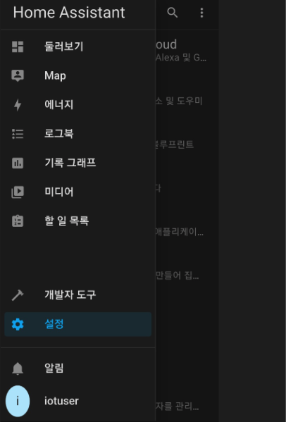
- “기기 및 서비스” 를 선택합니다.
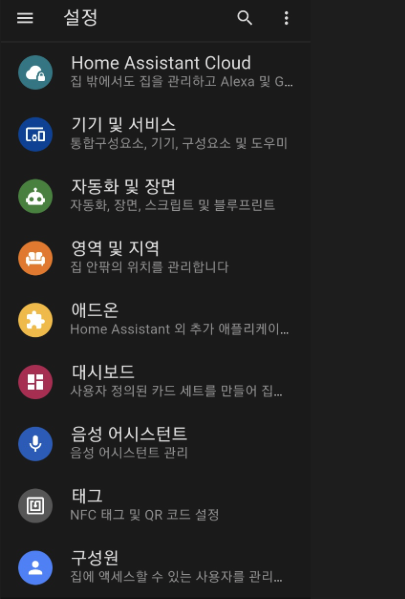
- “통합구성요소 추가하기”를 선택합니다.
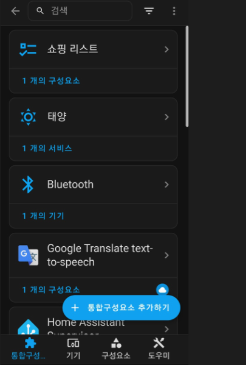
- “Matter 기기 추가”를 선택합니다.
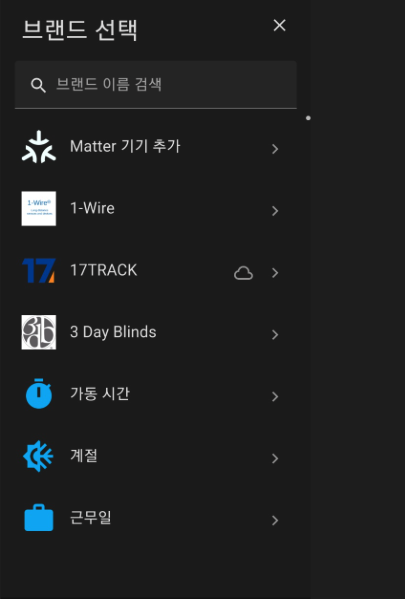
- “아니오, 새 제품입니다” 선택하기
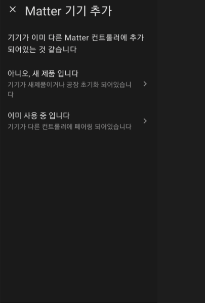
- 아카라홈앱에서 허브 M3의 Matter 페어링 코드를 생성합니다.
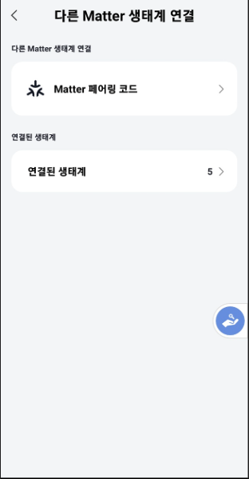
- 위에서 생성된 코드를 Home Assistant의 “Matter QR 코드 스캔”를 통해서 설정합니다.
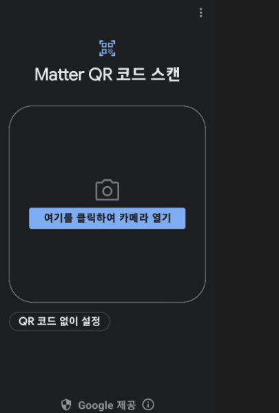
Home Assistant 대시 보드 구성 후 “둘러보기”에서 확인합니다. 허브 M3에 연결된 스마트 도어락 K100도 Home Assistant에 자동 등록됩니다. Home Assistant에서 도어락 K100 잠금해제 가능합니다.
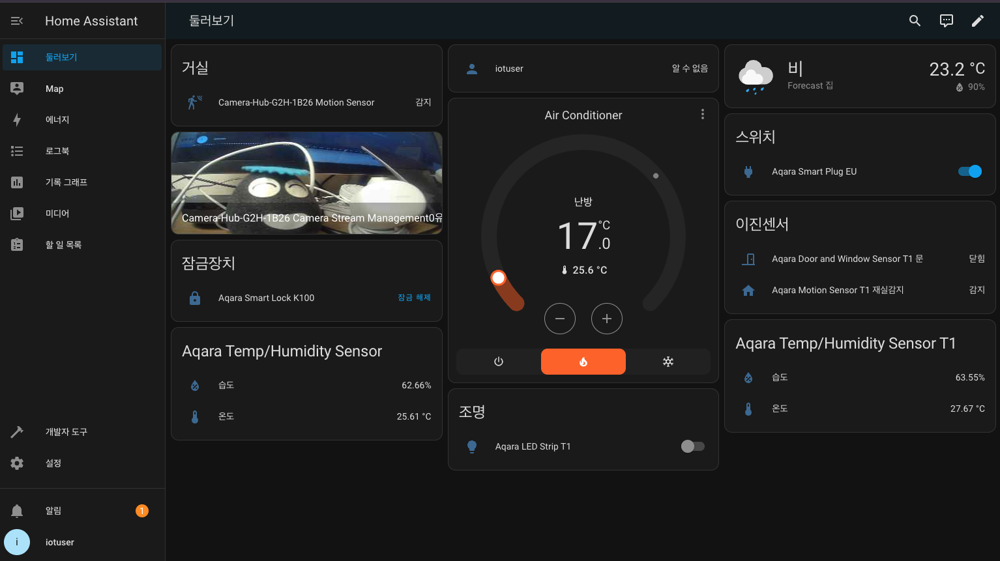
(참고) Home Assistant에 애플홈킷 지원 G2H/G2H Pro, G3,카메라 E1를 등록하기 위해서 “통합구성요소 추가하기”에서 Apple를 검색하신 후 “HomeKit 기기”로 등록하시면 됩니다.
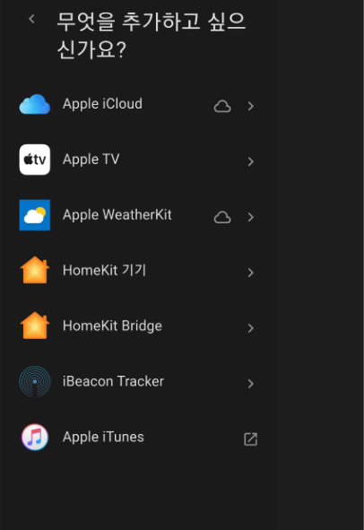
1.4 자동화 예시
1.4.1 시나리오
카메라가 움직임을 감지하면 스마트 도어락 K100 잠금 해제하기
1.4.2 자동화 설정 방법
- Home Assistant의 설정 메뉴에서 “자동화 및 장면” 선택하기
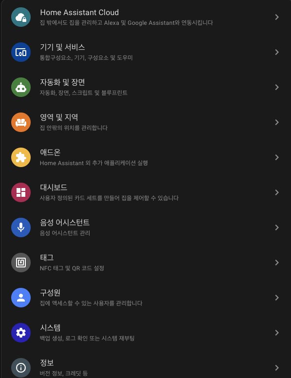
자동화 설정하기
조건: G2H 카메라가 움직을 감지했을 때
수행: 스마트 도어락 K100 잠금해제
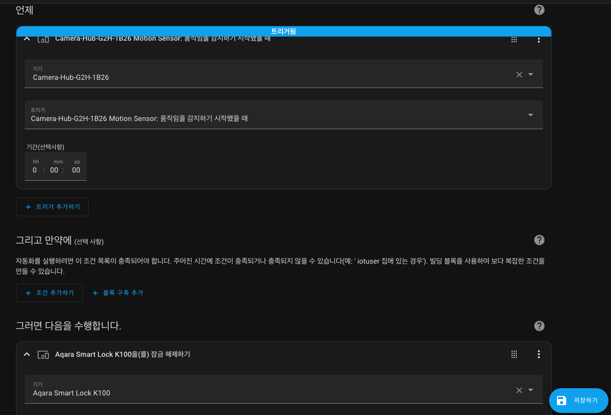
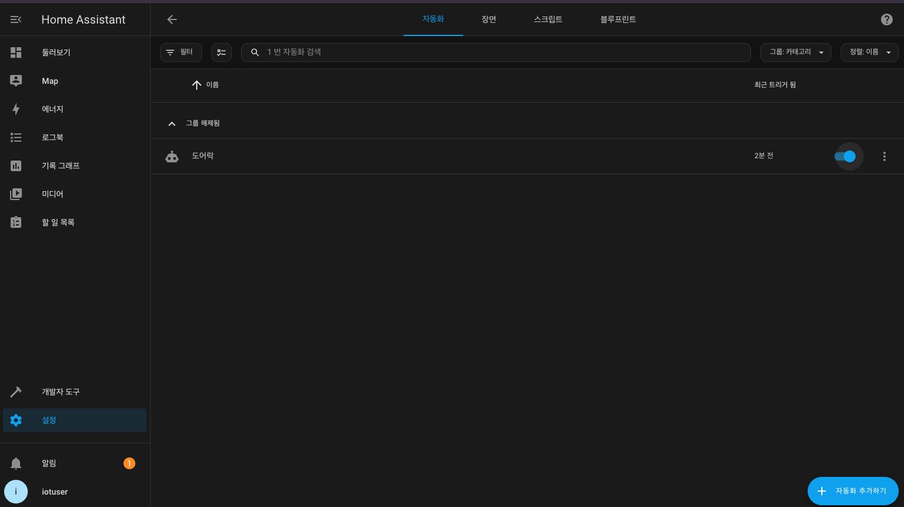
- 자동화 수행 관련 로그 정보
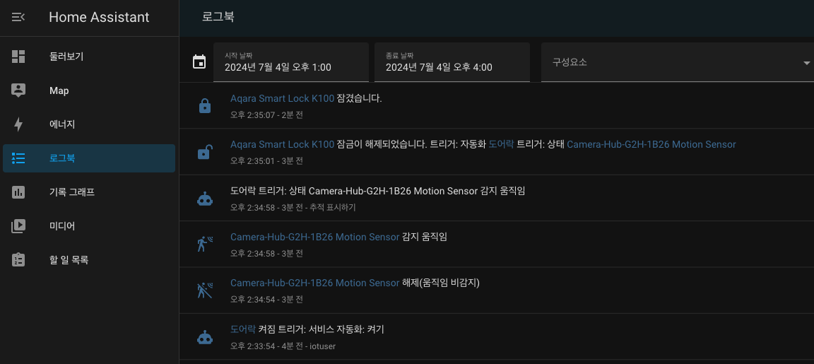